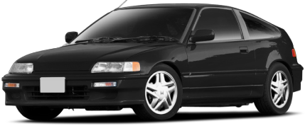

Honda CRX II
The second generation of Honda CR-X was introduced in 1988. This series of compact sport hatches was powered by a series of inline 4 engines in various states of tune. Built until 1991, the CR-X was replaced by the Honda Del Sol. The basic CRX was a shining example of Honda's magical blend of practicality and engineering prowess. With oil prices continuing to rise, the automaker's Japanese executives wanted a car that could hit 50 mpg; the engineers set out to develop a fuel-efficient yet sporty coupe based on the Civic sedan's chassis.